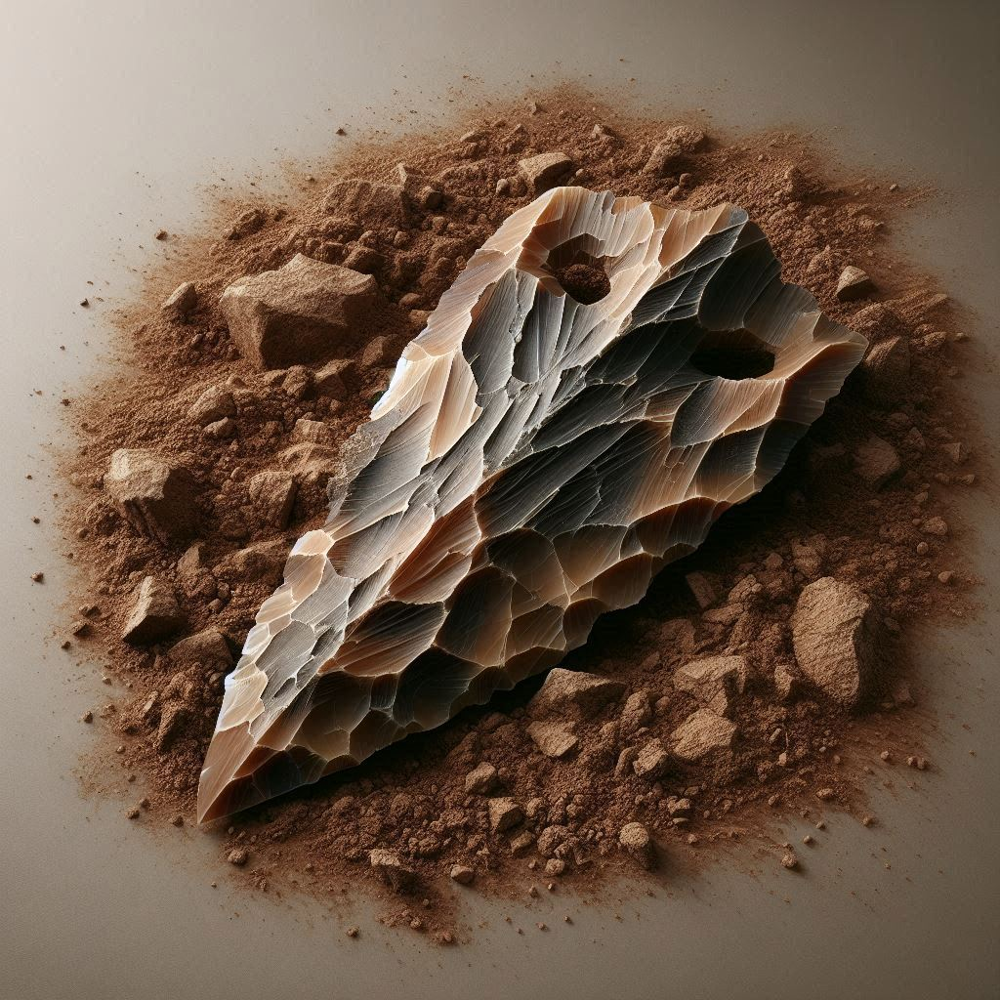
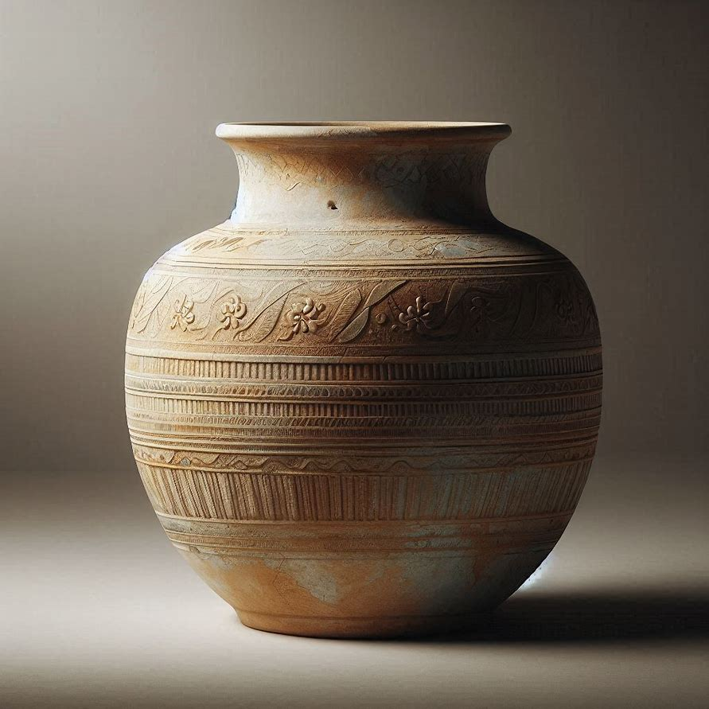
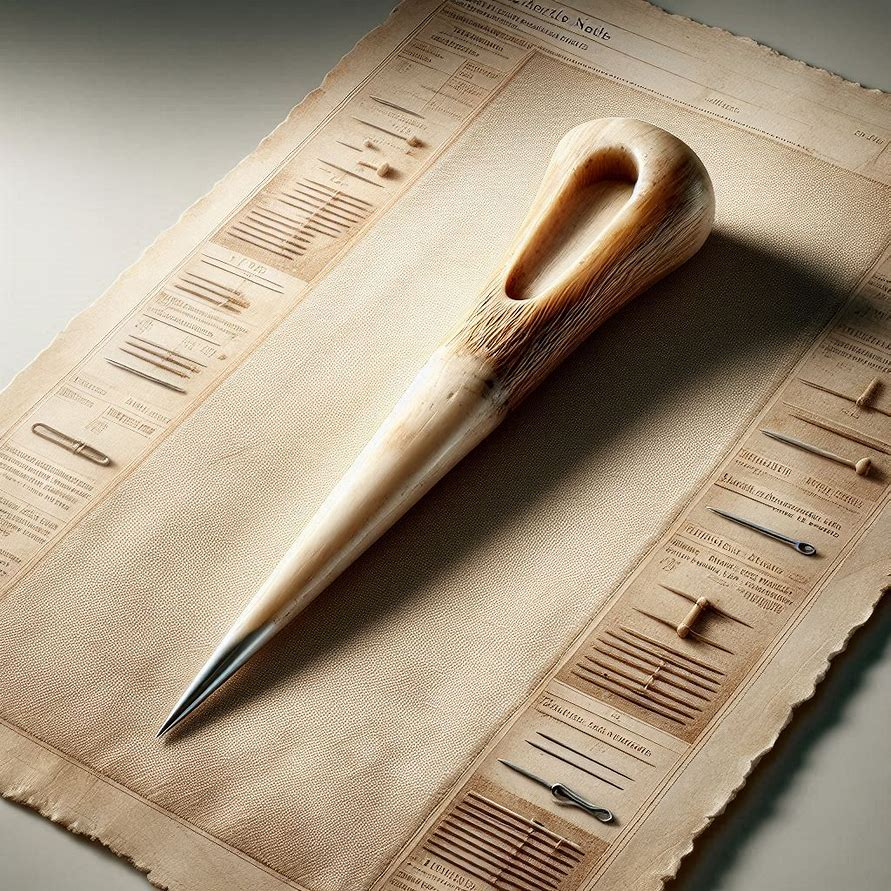

Archeology

Obsidian Spearhead
Material: Volcanic glass (obsidian), predominantly black with subtle gray translucence along thinner edges.
Size/Weight/Shape:
- Length: Approximately 14.2 cm
- Maximum width: Approximately 4.1 cm
- Thickness: Ranges from 0.4-0.9 cm
- Weight: Approximately 62 g
- Shape: Leaf-shaped, tapering to a pointed distal end with a slightly concave base suitable for hafting.
Estimated Age: Based on associated stratigraphy and typological comparison, likely produced several thousand years ago; precise dating pending contextual analysis.
Preservation State: Overall well-preserved. Edges remain sharp with minimal modern chipping. Surface shows slight patination consistent with long-term burial. No significant fractures or thermal alterations observed.
Location Found: Recovered from a controlled excavation at a dry upland terrace site; exact coordinates recorded in field notes.
Likely Purpose: Designed as a projectile or thrusting weapon component, intended for hafting onto a wooden shaft.
Evidence of Use: Microscopic edge wear visible along both lateral cutting edges. Minor step fractures near the tip suggest contact with hard material. No residues noted during initial visual inspection.
Manufacture Clues: Fine, parallel pressure-flaking scars present along both margins. Larger percussion flake removals visible near the base, indicating initial shaping by hard-hammer or soft-hammer percussion followed by detailed retouch.
Found With: Recovered in proximity to small lithic debitage, a fragmentary bone tool, and several unmodified stones. No associated ceramics or metal objects noted in the immediate context.
Burial or Habitat Context: Located within a compact, silty sediment layer approximately 40 cm below surface. The layer contained scattered faunal remains and lithic materials, with no evidence of structural features.
Symbolism: No engravings, pigments, or decorative modifications observed. Form and finish appear strictly functional.
Comparison: Comparable in size and workmanship to other obsidian projectile points from regional upland sites. Exhibits typical pressure-flaked margins and basal concavity consistent with known spearhead forms.
Additional Observations: The obsidian displays a uniform glassy luster with slight iridescence under angled light. The basal concavity shows minor smoothing, possibly from hafting contact. Overall morphology is symmetrical, with only slight deviation along one edge due to ancient flake removal.

Ceramic Storage Vessel
Material: Coarse earthenware clay with visible mineral inclusions; surface coated with a thin slip exhibiting a matte finish.
Size/Weight/Shape:
- Height: 38.6 cm
- Maximum diameter: 27.4 cm
- Rim diameter: 18.1 cm
- Base diameter: 11.3 cm
- Weight: Approximately 4.2 kg
- Shape: Globe body with a slightly constructed neck, flaring rim, and rounded base.
Estimated Age: Based on stratigraphic position and associated materials, likely produced several centuries ago; precise dating pending laboratory analysis.
Preservation State: Structurally intact with no major fractures. Minor surface abrasions and small chips along the rim. Slip layer partially worn, especially on the vessel's upper half. No evidence of restoration.
Location Found: Recovered from an excavation trench within the central habitation zone of the site; exact grid coordinates recorded in field documentation.
Likely Purpose: Designed for storage of dry goods or liquids, indicated by its capacity and enclosed form.
Evidence of Use: Interior surface shows faint horizontal striations and slight darkening near the base. No visible residues or encrustations noted during initial inspection.
Manufacture Clues: Hand-built using coil construction, evidenced by subtle internal coil lines. Exterior smoothed with a tool or hand, leaving faint parallel marks. Firing appears to have been conducted in an oxidizing environment, suggested by the uniform reddish-brown coloration.
Found With: Recovered in association with small ceramic sherds, a groundstone fragment, and scattered faunal remains. No metal artifacts or decorative items found in direct proximity.
Burial or Habitat Context: Located within a compact, silty soil layer approximately 55 cm below surface. The layer contained domestic refuse, including bone fragments and charcoal flecks, with no architectural features present.
Symbolism: No decorative motifs, incisions, or painted elements observed. Vessel exhibits a purely utilitarian form.
Comparison: Comparable in size and construction to other storage vessels from the same excavation area. Shares common traits such as coil-built walls, flaring rim, and coarse inclusions typical of local ceramic production.
Additional Observations: The vessel's surface shows slight unevenness consistent with hand-forming. The base is rounded but stable when placed on a flat surface. The interior slip is thinner than the exterior, allowing inclusions to be more visible inside the vessel.

Bone Needle
Material: Dense mammalian long-bone fragment, creamy white to light tan in coloration, with fine longitudinal grain typical of compact bone.
Size/Weight/Shape:
- Length: 9.7 cm
- Maximum width: 0.6 cm
- Thickness: 0.4 cm
- Weight: Approximately 6 g
- Shape: Elongated, tapering tool with a pointed distal end and a slightly flattened proximal end; cross-section oval to sub-rectangular.
Estimated Age: Based on stratigraphic association, likely produced several hundred to several thousand years ago; precise dating pending contextual analysis.
Preservation State: Well-preserved with minimal surface erosion. Point remains sharp with only slight rounding. Minor surface cracking present along the mid-section. No modern breaks observed.
Location Found: Recovered from a controlled excavation unit within the site's midden area; exact grid coordinates documented in field records.
Likely Purpose: Form and dimensions consistent with piercing or perforating tasks, suitable for use as a needle or awl.
Evidence of Use: Tip exhibits fine polish and slight compression consistent with repeated contact against resistant material. Lateral surfaces near the distal end show localized smoothing. No visible residues detected during initial inspection.
Manufacture Clues: Tool shaped from a long-bone splinter. Evidence of scraping along the shaft, visible as parallel linear striations. Distal point formed by careful abrasion and thinning. Proximal end shows slight beveling, likely from shaping or handling.
Found With: Recovered alongside small faunal fragments, a cluster of lithic flakes, and several unmodified stones. No associated ceramics or metal objects in immediate proximity.
Burial or Habitat Context: Located within a compact, dark organic soil layer approximately 32 cm below surface. Context contained mixed domestic refuse including bone, charcoal, and shell fragments.
Symbolism: No engravings, decorative modifications, or pigment traces observed. Tool exhibits strictly functional shaping.
Comparison: Comparable in size and workmanship to other bone awls and needles from the same excavation area. Shares common traits such as elongated form, scraped surfaces, and finely shaped point.
Additional Observations: Surface retains slight sheen in areas of repeated handling or use. Bone grain remains visible along the shaft. Tool is straight with only minor curvature near the proximal end, likely inherent to the original bone fragment.